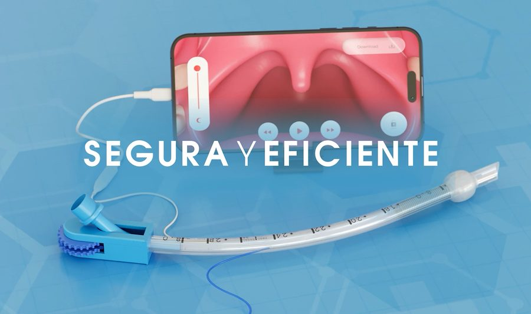

NC2026/0003395
PATENTEPATENTE - AIRWAYFLEX
DISPOSITIVO DE ACCIONAMIENTO MÉCANICO-MANUAL PARA MANIOBRAR UN TUBO DE INTUBACIÓN TRAQUEAL
- Inventores
- Luis Alberto Palacios – Javier Montejo Tarazona
- Sector
- SALUD
- Contacto
- 📞 3212063883

NC2026/0003395
PATENTEDISPOSITIVO DE ACCIONAMIENTO MÉCANICO-MANUAL PARA MANIOBRAR UN TUBO DE INTUBACIÓN TRAQUEAL